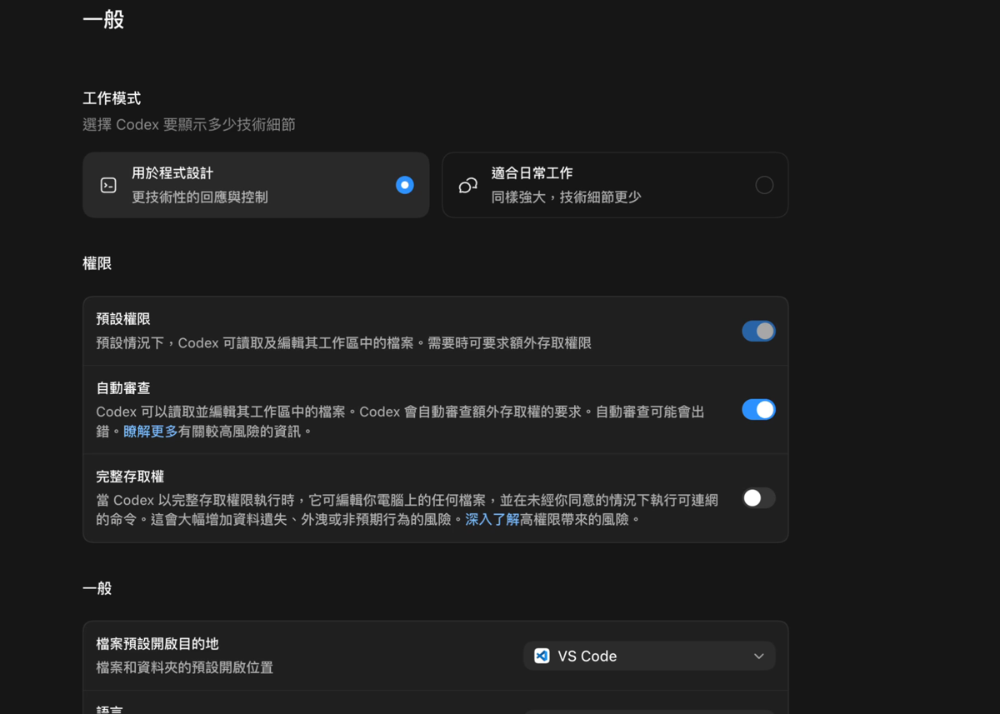
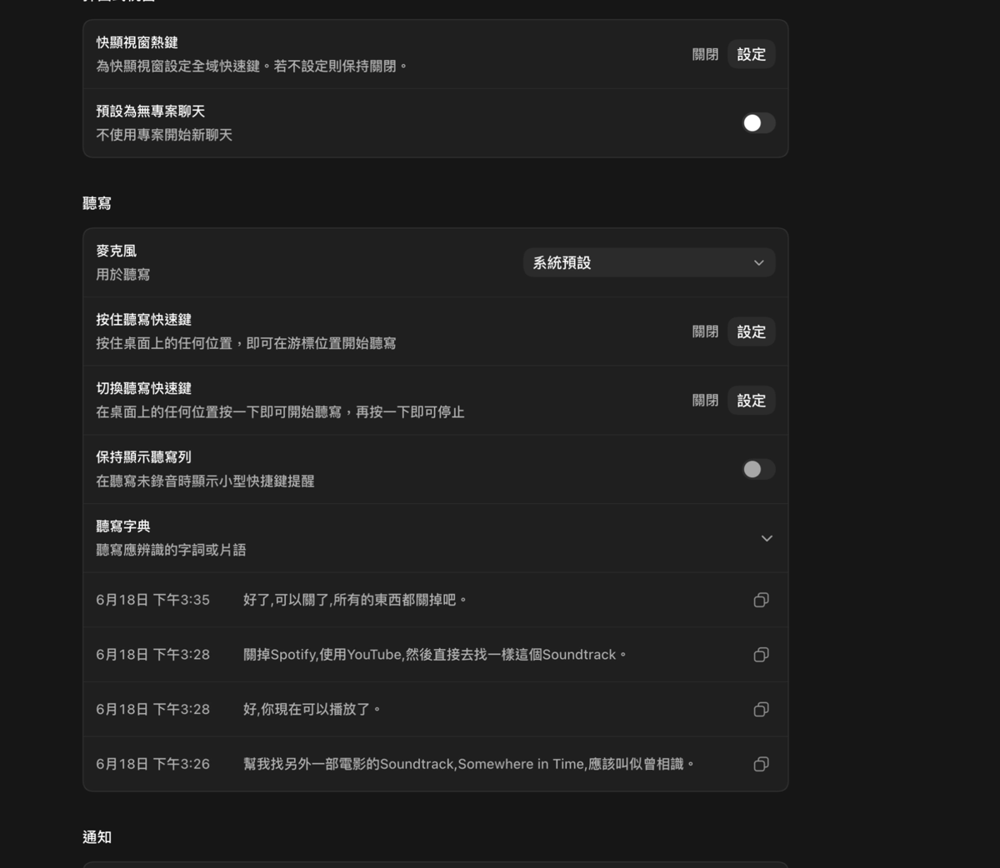
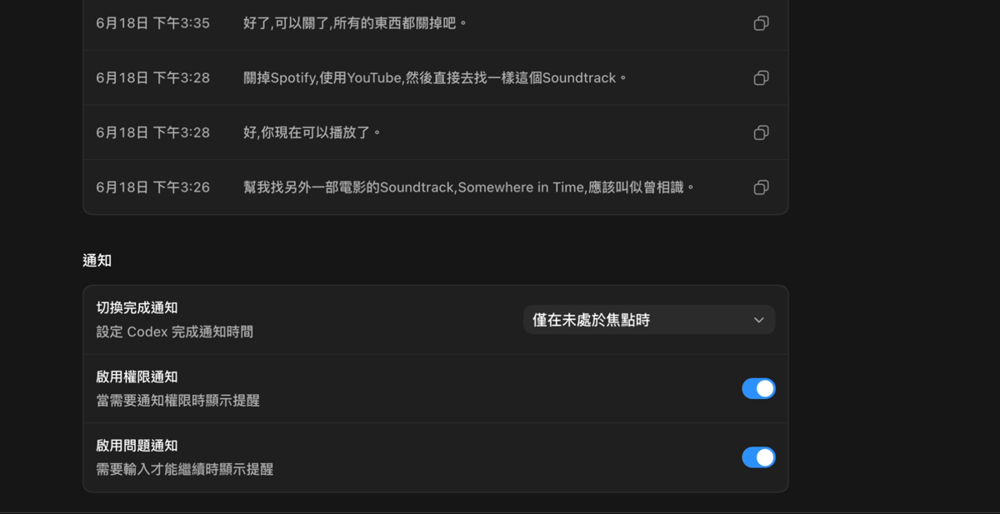
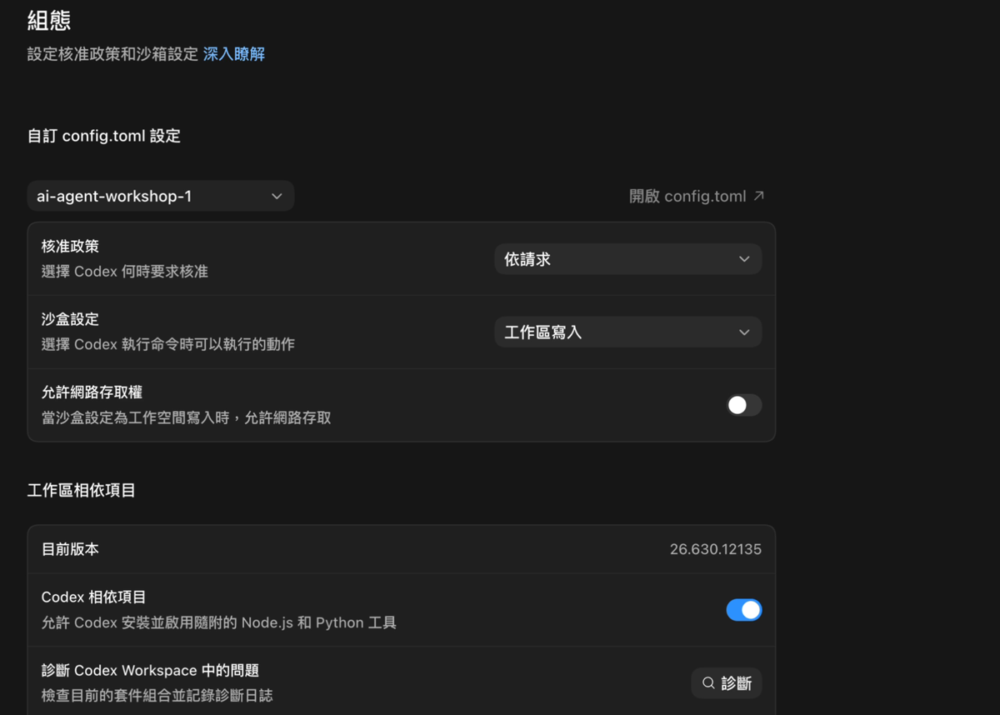
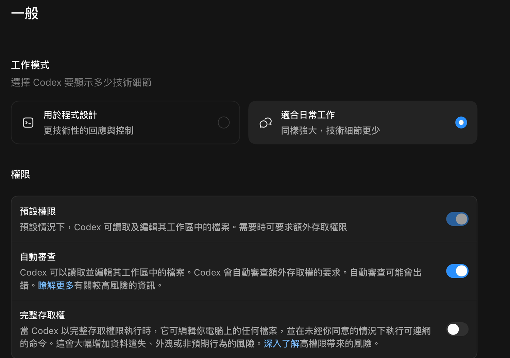
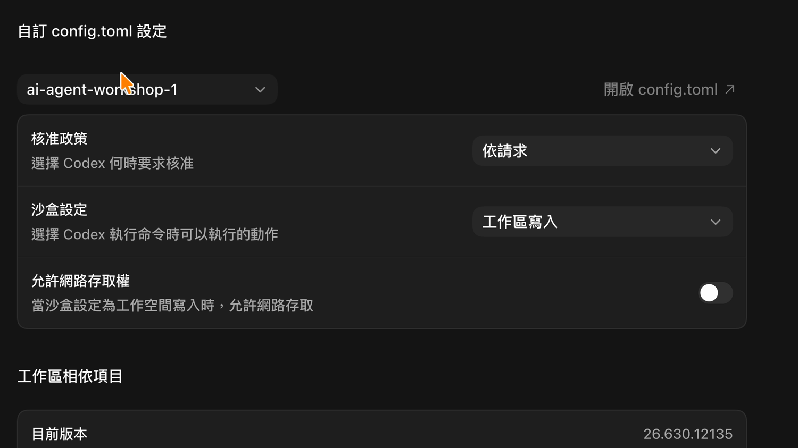
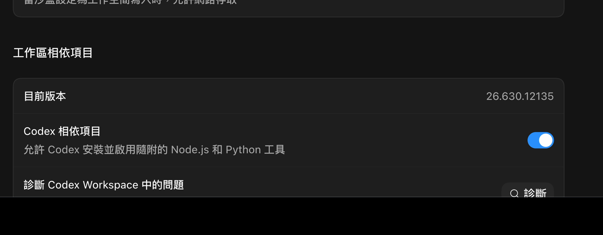

這份講義是 Module 1、Module 2、Module 3 之前的 Codex App 設定參考。它不是要大家背設定名稱，也不是要一開始就把所有功能打開。真正的重點是先看懂三件事：Codex 目前在哪個資料夾工作、它被允許做哪些事、遇到比較大的動作時會不會先問你。
Codex App 和一般聊天視窗不太一樣。一般聊天工具多半只回答你貼進去的內容；Codex 則可能在你指定的資料夾裡讀檔、改檔、產生新檔案、執行檢查，甚至在需要時連到外部工具。因此，設定不是裝飾選項，而是在回答一個很實際的問題：哪些事情可以讓 Codex 直接做，哪些事情必須先停下來讓人確認。
本講義依照錄影中的 Codex App 設定畫面整理，主要分成兩個頁面：
一般：影響 Codex App 平常使用時的互動方式。組態：影響目前工作區的 Agent、核准政策、沙盒與網路邊界。每一節都會先用白話說明畫面上的項目，再提供一組偏保守的設定建議。這些建議不是唯一正確答案，而是讓還不熟悉 AI Agent 與程式工具的使用者，先用比較容易理解、也比較容易回頭檢查的方式開始。
在看細部選項前，可以先把 Codex 的使用範圍想成三層。只要先抓住這三層，就比較不會被設定名稱嚇到：
| 範圍 | 意思 | 主要風險 |
|---|---|---|
| 工作區 | 目前開啟、讓 Codex 協助處理的專案資料夾。可以把它想成「這次上課的工作桌」。 | 如果選錯資料夾，Codex 可能在錯的地方找資料或產生檔案。 |
| 權限 | Codex 能不能讀檔、改檔、執行檢查，或要求更多能力。可以把它想成「你交給它的鑰匙」。 | 鑰匙越多，做事越方便，但不小心碰到不該碰的資料時，影響也越大。 |
| 網路 | Codex 執行任務時能不能連到外部網站、下載工具或查遠端資料。 | 連網有時必要，但也會讓流程多一層不確定性，尤其遇到帳號、金鑰、學生資料或學校內部資料時要更小心。 |
保守設定的核心想法是：先讓 Codex 只在這次練習資料夾內工作；如果它想離開這個範圍、連網、或做比較大的動作，再由使用者看懂原因後決定。
一般一般 頁面有很多選項，但本次 hands-on 只需要先看懂三件事：工作模式、基本權限、通知。其他像檔案開啟位置、彈出式視窗、聽寫，可以等熟悉後再調整。

這門課會讓 Codex 在練習資料夾中產生檔案、整理資料與檢查結果，所以工作模式偏向使用 用於程式設計。
這不表示學員要會寫程式。它只是在告訴 Codex：這次任務和「專案資料夾、檔案、輸出成果」有關。學員需要注意的是：開始前確認工作區是課程資料夾，完成後看 Codex 說它改了哪些檔案。
權限可以先想成「交給 Codex 的鑰匙」。本次 hands-on 只需要掌握一個原則：讓 Codex 可以在課程練習資料夾內工作，但不要一開始就把整台電腦都交出去。
預設權限：課堂練習通常需要，因為 Codex 要能在工作區內讀檔、改檔、產生檔案。自動審查：可以讓低風險流程比較順；但看到權限提醒時，仍要停下來看它想做什麼。完整存取權：課堂練習不要預設開啟。它可能讓 Codex 接觸工作區外的私人檔案、成績、行政資料或其他敏感內容。保守設定建議：保留工作區內的基本檔案能力，不預設開啟 完整存取權。
這個項目只影響「檔案完成後用什麼工具打開」，不影響 Codex 能不能完成 hands-on。課堂中建議用 VS Code，因為比較容易跟著講師看同一種畫面。
延伸參考：如果學員已經熟悉其他編輯器，可以之後再改；第一次設定時不需要深入比較。

彈出式視窗不是本次 hands-on 的重點。這裡只要記得：要讓 Codex 產生或修改課程檔案時，最好在有綁定課程工作區的視窗中操作。
延伸參考：如果之後只是問概念或整理文字，可以再學怎麼用無專案聊天。
聽寫也不是本次 hands-on 的必要設定。語音可以用來描述想法，但檔名、路徑、帳號、欄位名稱這類需要精準的內容，建議用鍵盤輸入並再次確認。
延伸參考：對語音輸入有興趣的學員，可以之後再研究麥克風、按住聽寫、切換聽寫等細項。

本次 hands-on 最重要的是保留 權限通知 與 問題通知。這樣 Codex 需要你同意權限，或需要你補充資訊時，你才看得到。
完成通知 可以依個人習慣調整，不是安全邊界的核心。
組態組態 頁面是本次 setup 的重點。它決定 Codex 在這個工作區可以做到什麼程度：能不能改檔、什麼時候要先問、能不能連網、能不能碰到工作區外的東西。

本次不需要編輯 config.toml。只要確認上方工作區下拉選單選到課程專案即可。
延伸參考：config.toml 是進階設定檔，適合之後需要細部管理多個工作區的人再研究。
核准政策 可以先想成煞車。太自動，風險比較高；太保守，課堂操作會一直中斷。
本次建議用 依請求：一般工作區內操作可以繼續，但遇到升級權限、離開工作區、連網或較高風險動作時，會回來問使用者。
沙盒設定 可以想成圍欄。圍欄越清楚，Codex 越不容易跑到課程資料夾以外的地方。
本次 hands-on 需要 Codex 產生或修改練習檔案，所以建議使用 工作區寫入：Codex 可以在課程專案內工作，但不把範圍放到整台電腦。
網路存取不是每次都要開。可以先把它想成「需要理由才打開的能力」。
本次 setup 的保守原則是：先不要把網路當成預設能力。只有任務明確需要下載、查外部資料或連接服務，而且講師說明原因後，再考慮開啟。
這一區只需要記住兩件事：
Codex 相關項目 通常保持開啟，讓課堂練習可以使用隨附工具。診斷 與 重新安裝 Workspace 是排錯用，不是一般課前設定步驟。延伸參考：如果 Codex 工具無法執行，或講師要求檢查環境，才需要深入看版本、診斷與重新安裝。
這一段是給第一次設定的學員照著畫面檢查用。重點不是把 Codex 開到最方便，而是先把範圍縮在課程專案內，讓 Codex 可以完成練習，同時保留人工判斷。請把每一步都當成一個確認問題：我知道 Codex 現在在哪裡工作嗎？我知道它被允許做什麼嗎？
一般 確認工作模式與基本權限
一般 頁面。工作模式：本課程會產生檔案、整理資料與檢查結果，所以偏向使用 用於程式設計。這不表示學員要會寫程式，而是讓 Codex 知道這次任務和專案資料夾有關。預設權限：代表 Codex 可以在目前工作區內讀取與編輯檔案。課堂練習通常會需要這個能力，但前提是工作區要選對。自動審查：可以讓低風險的額外權限要求比較順，但看到高風險提醒時仍然要停下來看懂原因。完整存取權：保守設定下不要預設打開。它會讓 Codex 接觸工作區以外的範圍，對課堂練習來說風險偏高。組態 確認工作區、核准政策與沙盒
組態，上方工作區是本次課程專案，例如 ai-agent-workshop-1。核准政策：保守練習可以先理解成 依請求。一般工作可以進行，但需要升級權限、離開工作區或做高風險操作時，會回來問使用者。沙盒設定：保守實作通常偏向 工作區寫入。Codex 可以在專案內建立或修改檔案，但不把範圍放到整台電腦。允許網路存取權：課堂練習通常先視為例外能力。只有任務明確需要下載、查外部資料或連接服務時，再由講師說明是否開啟。
Codex 相關項目：通常保持開啟，讓課堂練習可以使用隨附的 Node.js、Python 與本機工具。診斷 Codex Workspace 中的問題：這是排錯工具。只有 Codex 工具無法執行、環境異常或講師要求檢查時才需要使用。重新安裝 Workspace：不要當成一般課前設定步驟。重新安裝可能花時間，也可能改變原本可用的環境。以下不是操作指令，而是方便比較風險的保守設定輪廓：
| 類別 | 偏保守的方向 | 理由 |
|---|---|---|
| 工作模式 | 需要專案實作時偏向 用於程式設計。 |
讓 Codex 知道這次任務和檔案、資料夾與輸出成果有關。 |
| 預設權限 | 允許工作區內基本檔案能力。 | 練習中需要產生與修改檔案，但範圍仍限制在專案內。 |
| 完整存取權 | 不預設開啟。 | 避免 Codex 接觸工作區外的私人或敏感資料。 |
| 彈出式視窗 | 降低無專案聊天在實作任務中的使用。 | 避免產生檔案時缺少工作區脈絡。 |
| 聽寫 | 可輔助描述想法，但不依賴它輸入精準內容。 | 檔名、路徑、命令與程式碼需要更高精準度。 |
| 通知 | 保留權限與問題通知。 | 權限與補充問題都需要人工判斷。 |
| 核准政策 | 避免太自動，保留高風險操作的詢問。 | 兼顧練習效率與安全邊界。 |
| 沙盒 | 實作任務偏向工作區範圍，敏感資料偏向只讀思維。 | 控制誤改與誤讀的影響範圍。 |
| 網路存取 | 預設視為例外能力。 | 降低下載、外部連線與資料外傳風險。 |
| 診斷與重新安裝 | 視為排錯工具。 | 避免在課堂中因重建環境而增加不確定性。 |
看設定時，可以用這幾個問題判斷是否偏安全。不需要一次理解所有技術細節，只要能回答這些問題，就能掌握大方向：
這份講義是 Module 1、Module 2、Module 3 之前的 Codex App 設定參考。它不是要大家背設定名稱，也不是要一開始就把所有功能打開。真正的重點是先看懂三件事：Codex 目前在哪個資料夾工作、它被允許做哪些事、遇到比較大的動作時會不會先問你。
Codex App 和一般聊天視窗不太一樣。一般聊天工具多半只回答你貼進去的內容；Codex 則可能在你指定的資料夾裡讀檔、改檔、產生新檔案、執行檢查，甚至在需要時連到外部工具。因此，設定不是裝飾選項，而是在回答一個很實際的問題：哪些事情可以讓 Codex 直接做，哪些事情必須先停下來讓人確認。
本講義依照錄影中的 Codex App 設定畫面整理，主要分成兩個頁面：
一般：影響 Codex App 平常使用時的互動方式。組態：影響目前工作區的 Agent、核准政策、沙盒與網路邊界。每一節都會先用白話說明畫面上的項目，再提供一組偏保守的設定建議。這些建議不是唯一正確答案，而是讓還不熟悉 AI Agent 與程式工具的使用者，先用比較容易理解、也比較容易回頭檢查的方式開始。
在看細部選項前，可以先把 Codex 的使用範圍想成三層。只要先抓住這三層，就比較不會被設定名稱嚇到：
| 範圍 | 意思 | 主要風險 |
|---|---|---|
| workspace | 目前開啟、讓 Codex 協助處理的專案data夾。可以把它想成「這次上課的工作桌」。 | 如果選錯data夾，Codex 可能在錯的地方找data或產生檔案。 |
| permissions | Codex 能不能讀檔、改檔、執行check，或要求更多能力。可以把它想成「你交給它的鑰匙」。 | 鑰匙越多，做事越方便，但不小心碰到不該碰的data時，影響也越大。 |
| network | Codex 執行任務時能不能連到外部網站、下載工具或查遠端data。 | 連網有時必要，但也會讓workflow多一層不確定性，尤其遇到帳號、金鑰、studentsdata或學校內部data時要更小心。 |
保守設定的核心想法是：先讓 Codex 只在這次練習資料夾內工作；如果它想離開這個範圍、連網、或做比較大的動作，再由使用者看懂原因後決定。
一般 頁面有很多選項，但本次 hands-on 只需要先看懂三件事：工作模式、基本權限、通知。其他像檔案開啟位置、彈出式視窗、聽寫，可以等熟悉後再調整。
這門課會讓 Codex 在練習資料夾中產生檔案、整理資料與檢查結果，所以工作模式偏向使用 用於程式設計。
這不表示學員要會寫程式。它只是在告訴 Codex：這次任務和「專案資料夾、檔案、輸出成果」有關。學員需要注意的是：開始前確認工作區是課程資料夾，完成後看 Codex 說它改了哪些檔案。
權限可以先想成「交給 Codex 的鑰匙」。本次 hands-on 只需要掌握一個原則：讓 Codex 可以在課程練習資料夾內工作，但不要一開始就把整台電腦都交出去。
預設permissions：課堂practice通常需要，因為 Codex 要能在workspace內讀檔、改檔、產生檔案。自動審查：可以讓低風險workflow比較順；但看到permissions提醒時，仍要停下來看它想做什麼。完整存取權：課堂practice不要預設開啟。它可能讓 Codex 接觸workspace外的私人檔案、成績、行政data或其他敏感Content。保守設定建議：保留工作區內的基本檔案能力，不預設開啟 完整存取權。
這個項目只影響「檔案完成後用什麼工具打開」，不影響 Codex 能不能完成 hands-on。課堂中建議用 VS Code，因為比較容易跟著講師看同一種畫面。
延伸參考：如果學員已經熟悉其他編輯器，可以之後再改；第一次設定時不需要深入比較。
彈出式視窗不是本次 hands-on 的重點。這裡只要記得：要讓 Codex 產生或修改課程檔案時，最好在有綁定課程工作區的視窗中操作。
延伸參考：如果之後只是問概念或整理文字，可以再學怎麼用無專案聊天。
聽寫也不是本次 hands-on 的必要設定。語音可以用來描述想法，但檔名、路徑、帳號、欄位名稱這類需要精準的內容，建議用鍵盤輸入並再次確認。
延伸參考：對語音輸入有興趣的學員，可以之後再研究麥克風、按住聽寫、切換聽寫等細項。
本次 hands-on 最重要的是保留 權限通知 與 問題通知。這樣 Codex 需要你同意權限，或需要你補充資訊時，你才看得到。
完成通知 可以依個人習慣調整，不是安全邊界的核心。
組態 頁面是本次 setup 的重點。它決定 Codex 在這個工作區可以做到什麼程度：能不能改檔、什麼時候要先問、能不能連網、能不能碰到工作區外的東西。
本次不需要編輯 config.toml。只要確認上方工作區下拉選單選到課程專案即可。
延伸參考：config.toml 是進階設定檔，適合之後需要細部管理多個工作區的人再研究。
核准政策 可以先想成煞車。太自動，風險比較高；太保守，課堂操作會一直中斷。
本次建議用 依請求：一般工作區內操作可以繼續，但遇到升級權限、離開工作區、連網或較高風險動作時，會回來問使用者。
沙盒設定 可以想成圍欄。圍欄越清楚，Codex 越不容易跑到課程資料夾以外的地方。
本次 hands-on 需要 Codex 產生或修改練習檔案，所以建議使用 工作區寫入：Codex 可以在課程專案內工作，但不把範圍放到整台電腦。
網路存取不是每次都要開。可以先把它想成「需要理由才打開的能力」。
本次 setup 的保守原則是：先不要把網路當成預設能力。只有任務明確需要下載、查外部資料或連接服務，而且講師說明原因後，再考慮開啟。
這一區只需要記住兩件事：
Codex 相關項目 通常保持開啟，讓課堂practice可以使用隨附工具。診斷 與 重新安裝 Workspace 是排錯用，不是一般課前settings步驟。延伸參考：如果 Codex 工具無法執行，或講師要求檢查環境，才需要深入看版本、診斷與重新安裝。
這一段是給第一次設定的學員照著畫面檢查用。重點不是把 Codex 開到最方便，而是先把範圍縮在課程專案內，讓 Codex 可以完成練習，同時保留人工判斷。請把每一步都當成一個確認問題：我知道 Codex 現在在哪裡工作嗎？我知道它被允許做什麼嗎？
一般 頁面。工作模式：本course會產生檔案、整理data與check結果，所以偏向使用 用於程式設計。這不表示學員要會寫程式，而是讓 Codex 知道這次任務和專案data夾有關。預設permissions：代表 Codex 可以在目前workspace內讀取與編輯檔案。課堂practice通常會需要這個能力，但前提是workspace要選對。自動審查：可以讓低風險的額外permissions要求比較順，但看到高風險提醒時仍然要停下來看懂原因。完整存取權：保守settings下不要預設打開。它會讓 Codex 接觸workspace以外的範圍，對課堂practice來說風險偏高。組態，上方workspace是本次course專案，例如 ai-agent-workshop-1。核准政策：保守practice可以先理解成 依請求。一般工作可以進行，但需要升級permissions、離開workspace或做高風險操作時，會回來問使用者。sandboxsettings：保守實作通常偏向 workspace寫入。Codex 可以在專案內建立或修改檔案，但不把範圍放到整台電腦。允許network存取權：課堂practice通常先視為例外能力。只有任務明確需要下載、查外部data或連接服務時，再由講師說明是否開啟。Codex 相關項目：通常保持開啟，讓課堂practice可以使用隨附的 Node.js、Python 與本機工具。診斷 Codex Workspace 中的問題：這是排錯工具。只有 Codex 工具無法執行、環境異常或講師要求check時才需要使用。重新安裝 Workspace：不要當成一般課前settings步驟。重新安裝可能花Time，也可能改變原本可用的環境。以下不是操作指令，而是方便比較風險的保守設定輪廓：
| 類別 | 偏保守的方向 | 理由 |
|---|---|---|
| 工作模式 | 需要專案實作時偏向 用於程式設計。 |
讓 Codex 知道這次任務和檔案、data夾與輸出成果有關。 |
| 預設permissions | 允許workspace內基本檔案能力。 | practice中需要產生與修改檔案，但範圍仍限制在專案內。 |
| 完整存取權 | 不預設開啟。 | 避免 Codex 接觸workspace外的私人或敏感data。 |
| 彈出式視窗 | 降低無專案聊天在實作任務中的使用。 | 避免產生檔案時缺少workspace脈絡。 |
| 聽寫 | 可輔助描述想法，但不依賴它輸入精準Content。 | 檔名、路徑、命令與程式碼需要更高精準度。 |
| 通知 | 保留permissions與問題通知。 | permissions與補充問題都需要人工判斷。 |
| 核准政策 | 避免太自動，保留高風險操作的詢問。 | 兼顧practice效率與安全邊界。 |
| sandbox | 實作任務偏向workspace範圍，敏感data偏向只讀思維。 | 控制誤改與誤讀的影響範圍。 |
| network存取 | 預設視為例外能力。 | 降低下載、外部連線與data外傳風險。 |
| 診斷與重新安裝 | 視為排錯工具。 | 避免在課堂中因重建環境而增加不確定性。 |
看設定時，可以用這幾個問題判斷是否偏安全。不需要一次理解所有技術細節，只要能回答這些問題，就能掌握大方向：